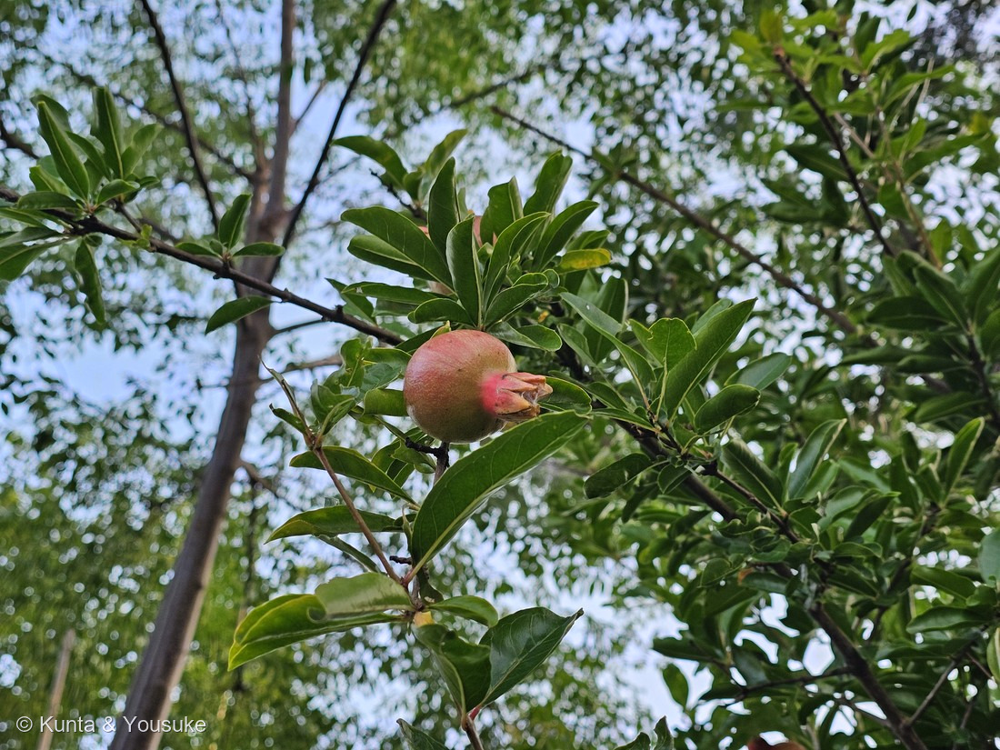
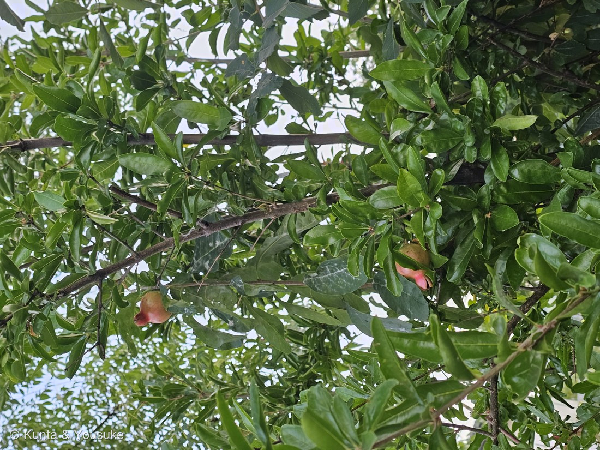

地図を読み込んでいるよ…
🔍 写真も地図も、押しているあいだ拡大して見られるよ（スマホは指を置いてすこし待ってね）。
🌍 の地図＝この子がもともと自生している場所を緑に。西アジア（イラン・アフガニスタンあたり）が原産。古くから世界中で栽培され、日本へは平安時代までに渡来。庭木・街の木としてなじみ深い。
⭐西アジア〜中央アジアが原産——イラン・アフガニスタンあたりが本家で、パキスタンや中央アジアにも。⚠地図は国ごと塗っているけど、もとはその一部の地域だよ。⚠日本は塗っていない——ザクロは平安時代までに渡ってきた外来の果樹・庭木で、日本はふるさとじゃない（でも古くからなじみ深い庭木）。⭐古くから世界中で栽培され、豊穣のシンボルとして各地の物語に登場するよ。
⚠ 地図は国（日本と中国だけ県・省）までしか塗れないから、ほんとうの分布より広く見えていることがあるよ。地図はだいたいの場所。正確なところは、上の文を見てね。
ザクロ（石榴）
Punica granatum
別名 · ジャクロ／英名 pomegranate／ 原産 · 西アジア（イラン・アフガニスタン）／ 見どころ · ⭐実の先の“王冠”のがく・ガーネットの語源
ミソハギ科 · Lythraceae（ザクロ属 Punica）── 110 サルスベリと同じ科・フトモモ目
燻太さんの見立て「これは、確実にザクロだね。」──ずばり的中。しかも「ガーネットみたい」は、語源そのものだよ。
名前と学名の由来 ── ガーネットも、手榴弾も、ザクロから
- ⭐属名 Punica（プニカ） は、ラテン語で「カルタゴの／フェニキアの」。古代ローマの人が、カルタゴ経由でこの実を知ったので、「カルタゴのリンゴ（punicum malum）」と呼んだんだ。
- ⭐種小名 granatum（グラナトゥム）＝「たくさんの種（粒）のある」。実の中の、無数の赤い粒のこと。英名 pomegranate も、pome（リンゴ）＋ granate（粒の）＝「粒のリンゴ」だよ。
- ⭐⭐⭐燻太さんの「ガーネットみたい」＝じつは、語源そのもの！ 宝石のガーネット（garnet）は、この granatum（ザクロ／粒）から名づけられたんだ。ザクロの粒の深い赤が、そのまま宝石の名前になった。⭐さらに——手榴弾（グレネード・grenade）も、同じ語源。丸い形と、中に詰まった粒（破片）が、ザクロに似ているから。宝石も、武器も、みんなザクロの“粒”から名前をもらっているんだよ。
- 和名「ザクロ（石榴・柘榴）」は、中国名から来ている。
この植物のこと
- ミソハギ科ザクロ属の落葉小高木。⭐110 サルスベリと同じミソハギ科（フトモモ目）だよ。西アジア原産で、古くから世界中で育てられ、日本へも平安時代までに渡ってきた、なじみ深い庭木。
- ⭐⭐実の目印＝王冠のような“がく”：花のがく（萼）が、実になっても先端に王冠みたいに残る（写真①の、実のおしりのギザギザ）。⭐これがザクロの実の、いちばんの見分けポイント。花は6月ごろ、オレンジ赤の筒形。
- ⭐⭐燻太さんの質問①「実は長い期間ついてる？」＝うん、長いよ。この緑〜ピンクの若い実が、夏から秋（9〜11月）まで数ヶ月かけて大きく育つ。今日見つけたのは、その育ち始めだね。
- ⭐⭐燻太さんの質問②「ガーネットの赤い可食部はいずれ見える？」＝秋に見えるよ。熟すと硬い革のような皮がパックリ割れて、中から赤い粒（仮種皮＝種を包む、みずみずしい部分）がのぞく。あの赤い宝石が、食べるところ。「実が割れて、中の宝石を見せる」のが、ザクロの見どころなんだ。
- ⭐燻太さんの質問③「スーパーで滅多に見ない」＝そのとおり。庭木としては昔から日本に多いけれど、国産の実は小さめ・酸味が強め。食用の生の実は、主にアメリカ（カリフォルニア）からの輸入か、ジュースの形が多い。だから「木はよく見るのに、実は売り場にない」という不思議が起きるんだ。
コラム ── 「粒がたくさん」の木がくれた、たくさんの名前と物語
- 💎ガーネット（宝石）：ザクロの粒の赤から。＝燻太さんの直感どおり。
- 💣グレネード（手榴弾）：丸い形と、中の粒（破片）から。
- 🌍豊穣・子孫繁栄のシンボル：「粒（種）がたくさん」なので、世界中で実りと命の象徴にされてきた。ギリシャ神話の冥界の女神ペルセポネ、旧約聖書、日本では鬼子母神（子育ての神）——ザクロは、いろんな文化の物語に登場する。
- ——ひとつの実の「たくさんの粒」から、宝石の名前も、武器の名前も、豊穣の物語も生まれた。植物の名前を調べると、いつも思いがけない世界につながるね。
同定について
- ⭐実の先の“王冠”のがく＋（これから粒が詰まる）丸い実＋光沢のある細長い葉＋庭木・街木——この組み合わせは、ザクロならでは。⭐王冠のがくを見れば、若い緑の実でも「ザクロだ」と分かる。
- ⭐⭐燻太さんの「確実にザクロだね」＝的中。実の王冠を、ちゃんと見抜いていたね。
物語 ── 帰り道の、宝石の木
燻太さんが、お仕事帰りの夕方に見つけた一本。まだ緑にピンクがさしただけの、若い実。でも、この実の中では、これから秋にむけて、たくさんの赤い粒（宝石）が育っていく。もし同じ道を秋にまた通れたら、実がぱっくり割れて、ガーネット色の粒がのぞく瞬間に会えるかもしれない。今日の一枚は、その物語の“はじまり”だね。帰り道に足を止めて、木を見上げてくれて、ありがとう。
参考：etymonline「pomegranate」（pōmum「リンゴ」＋grānātum「種の多い」／garnet・grenade も granatum が語源）／Missouri Botanical Garden「Punica granatum」（ミソハギ科の落葉小高木・イラン〜北インド原産／実の先に萼が残る／熟すと裂開し赤い仮種皮）／NC State Extension「Punica granatum」（Lythraceae／花期初夏・結実は秋）